In this guide, the “site manager” is the contact appointed by Secotech for this site. The team must receive their name and contact before starting. Site and main contractor safety instructions remain applicable; additional commercial agreements must come from Secotech.
Send photos to the site folder in OPENBTP or by WhatsApp to the site manager. Include site, area, date and subject (batch, substrate, waterproofing, damage or final checks). For an emergency or work stoppage, call: a photo or message alone is not enough.
112 · Serious emergency: 112. Give the site address, not Secotech’s office address.
Before bonding directly to gypsum or anhydrite, apply the specified compatible primer. Before waterproofing, follow the preparation required by that product: do not assume that primer is always unnecessary. For SafetyGel on porous substrates, the data sheet specifies a preparatory coat diluted with 10–20 % water before the two undiluted coats.
Very dusty or absorbent substrates may need specific treatment. Check the data sheet for the product supplied and the actual substrate.
Before laying tiles, check floors and walls with a straightedge, spirit level or laser. Also check levels and angles.
Thin-bed adhesive does not correct a substrate outside tolerance. Photograph defects before starting.
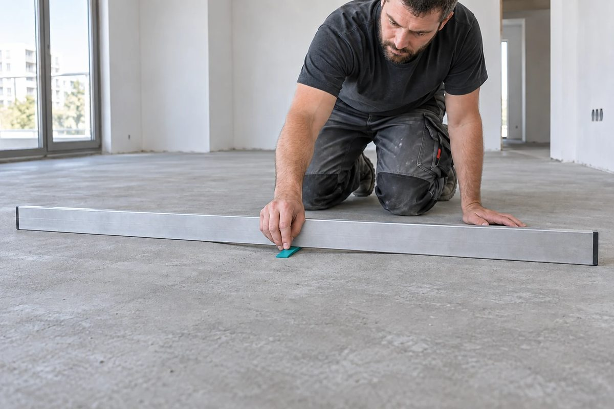
Illustration · Check flatness and plumb before starting
SECOTECHGood practice guide · English
11 · SubstratesCritical
Report unsuitable substrates in writing
Do not start on an unsuitable substrate. Send the site manager photographs, the precise location and a description of the defect, then wait for instructions.
The written record documents the initial condition and allows corrections to be decided before tiling.
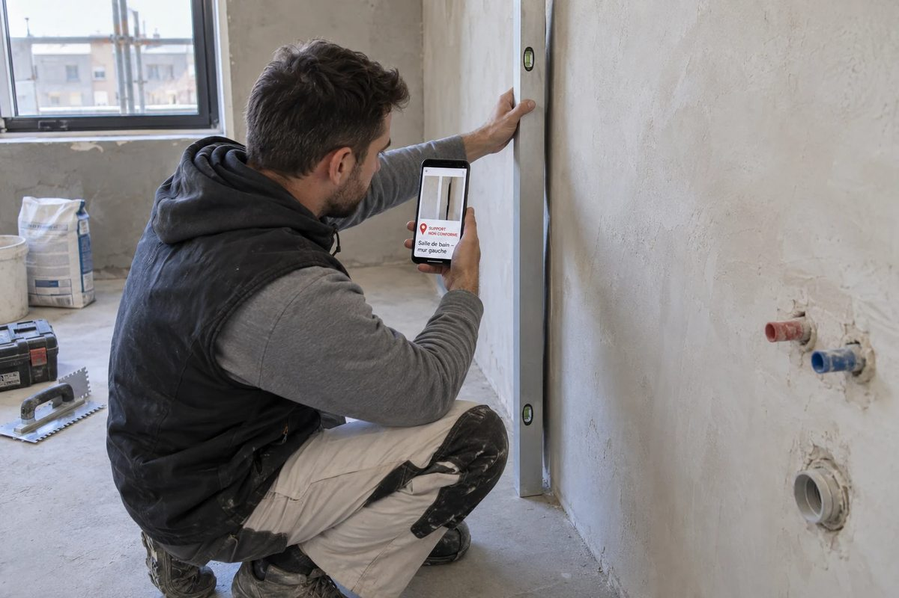
Illustration · Report unsuitable substrates in writing
30 · SubstratesCritical
Moisture: measure before tiling
Identify the substrate and record the test method, location and result. For anhydrite screeds with X-GEL S1, Litokol requires less than 0.5% CM, or less than 0.3% CM for heated screeds. Use the carbide method (CM) at authorised test points without damaging heating pipes. Electronic meters locate damp areas and do not replace this test. For cement screeds or other systems, obtain the applicable limit before tiling.
There is no universal limit for every cement screed. Follow the screed and system requirements; stop if the limit is unknown or exceeded.
Obtain the record of initial heating and cooling, following the heating and screed manufacturers. Check cracks, moisture and joints before tiling. Have the heating stopped and let the substrate reach the prescribed installation temperature. Respect perimeter, movement and screed joints. After the complete system cures, restart gradually under the approved protocol.
The tiler must not adjust the heating controls. Without an approved protocol or suitable conditions, do not start; contact the site manager.
Before laying tiles, confirm axes, starting points, visible cuts and floor-to-wall alignment. Do not change the layout without approval.
Checking beforehand avoids small visible cuts and misaligned joints.
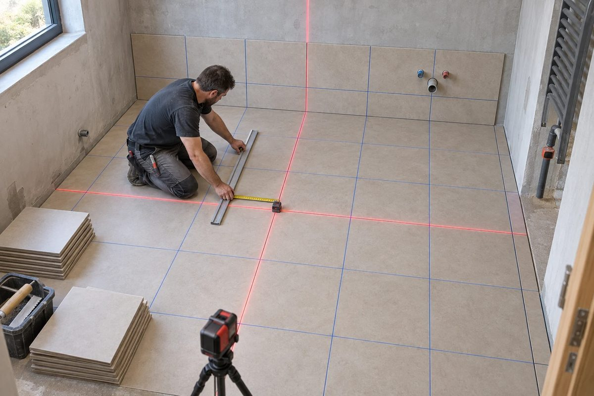
Illustration · Tile layout and joint alignment
SECOTECHGood practice guide · English
32 · PreparationSecotech rule
Check tiles and store products correctly
Before installation, check product reference, shade, calibre, quantity and visible defects. ALWAYS PHOTOGRAPH the labels or boxes of every batch before starting: the product reference, shade code, calibre and batch number must be readable in the photos. Send the photos to the site manager and keep them in the project records. Compare several boxes and distribute shades according to the approved appearance. Also keep batch labels. Store bags dry and liquids at the specified temperature; check expiry dates.
Photos are mandatory for every batch on every project, even when the boxes look identical. They make it possible to identify the exact shade for extra orders or repairs. Do not install a questionable batch; report discrepancies before use.
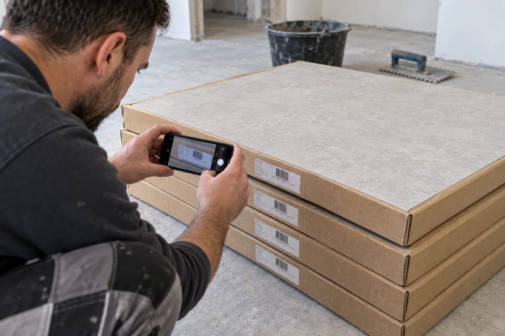
Illustration · Check tiles and store products correctly
45 · PreparationZero tolerance
Never start tiling a room without enough tiles to finish it
Starting to tile a room or area is strictly forbidden until you have checked and confirmed that the tiles actually available and reserved are sufficient to complete the whole room, with the same product reference, the same shade and the approved calibre. Count usable tiles and allow for cuts, breakages and the required reserve. An expected delivery or the hope of placing another order is not enough. IF THERE IS ANY DOUBT OR NOT ENOUGH MATERIAL: DO NOT START. Inform the site manager and wait until the full quantity has been received and checked before installing any tiles.
If tiles run out and the factory no longer produces the same shade, another batch may have a visible colour difference. All tiles already installed in the room may then have to be removed and the work restarted. Never take this risk, even to start only part of the room.
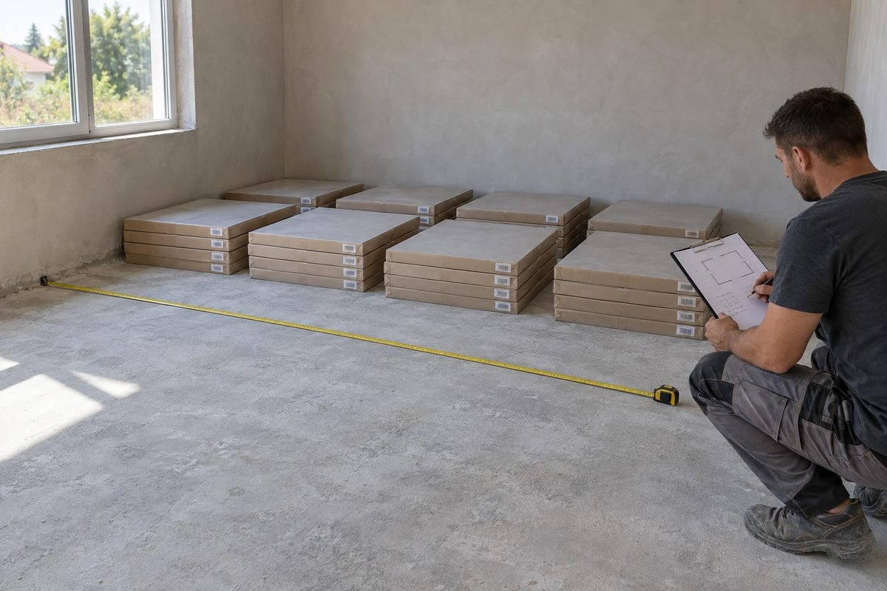
Illustration · Never start tiling a room without enough tiles to finish it
SECOTECHGood practice guide · English
01 · AcousticsCritical
Perimeter acoustic strips
In apartments, never cut the perimeter acoustic strips before the tiles have been laid and grouted.
The strip separates the screed from the walls and prevents acoustic bridges.
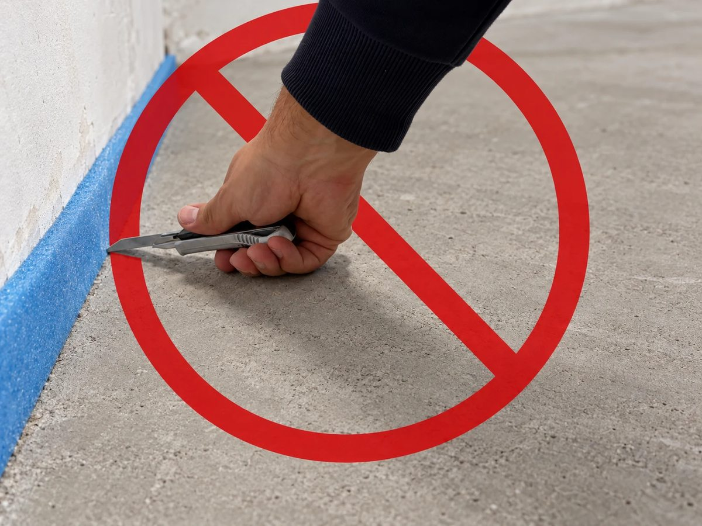
Illustration · Perimeter acoustic strips
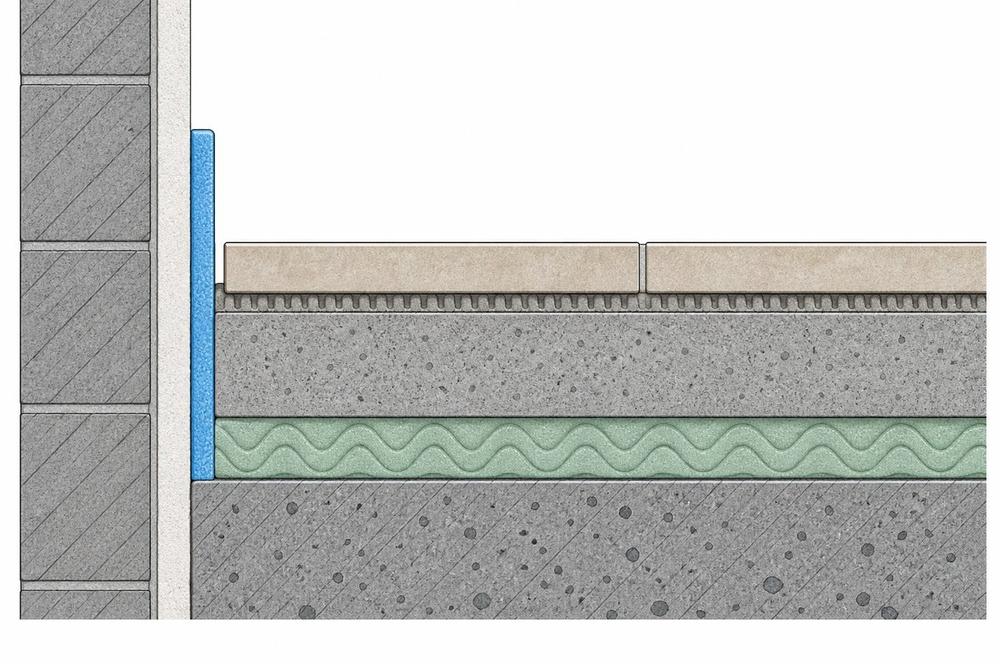
Technical diagram · Perimeter acoustic strips
02 · AcousticsCritical
Skirting tiles and the flexible bottom joint
Place skirting tiles on small spacers, without touching the floor tiles. Fill the upper joint against the wall with the adhesive used to fix the skirting, as required by Secotech, and trim it cleanly. After removing the spacers, fill the lower joint with the specified flexible sealant. Never put adhesive in the lower joint.
The bottom joint must remain flexible to avoid transmitting impact sound.
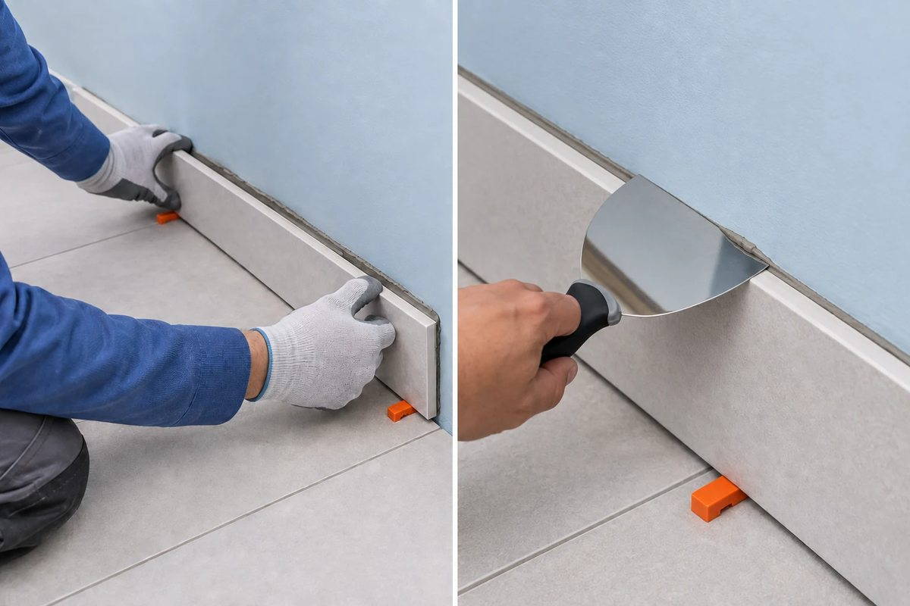
Illustration · Skirting tiles and the flexible bottom joint
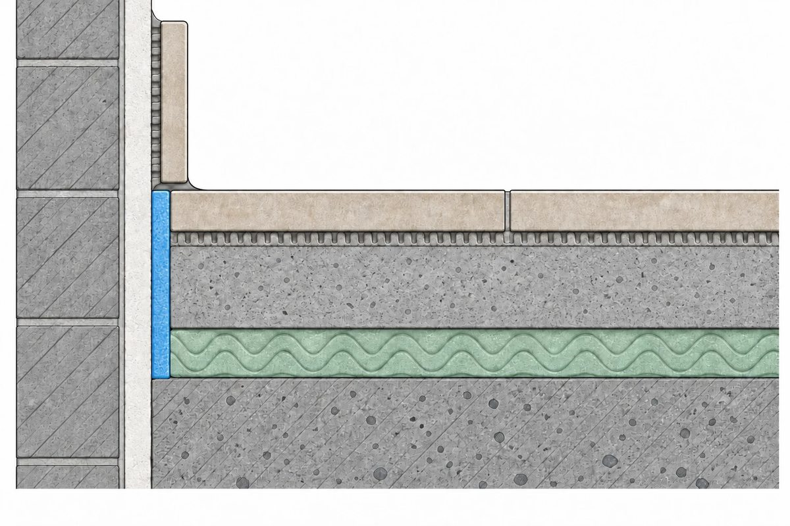
Technical diagram · Skirting tiles and the flexible bottom joint
SECOTECHGood practice guide · English
13 · InstallationSecotech rule
Back-buttering when any side reaches 60 cm
Secotech requires back-buttering when at least one tile side is 60 cm or longer, including 60 × 60, 30 × 60 and 30 × 120 cm. For smaller tiles, also use it if required by the system or conditions. Lift a fresh tile to check adhesive transfer.
This covers square and rectangular tiles. Keep ridges parallel if both surfaces are notched.
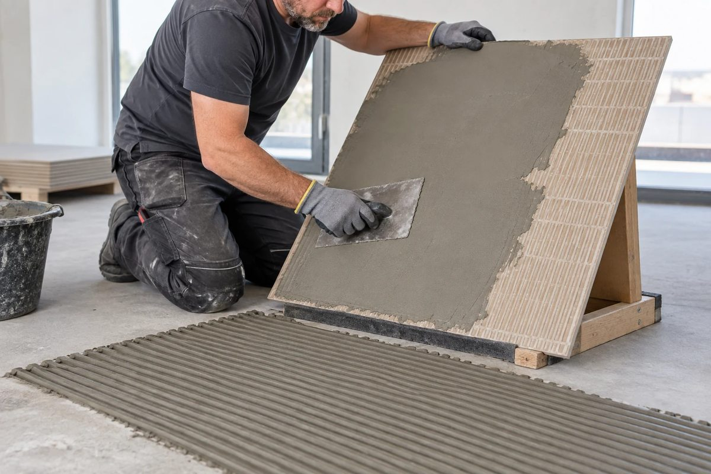
Contact coat on tile back · combed adhesive on substrate
Use levelling clips when at least one tile side is 60 cm or longer, including rectangles. For smaller sizes, use them only on a specific instruction from the site manager.
Clips reduce lippage; they never correct an uneven substrate.
Identify structural, screed division, expansion and perimeter joints. Carry the screed movement joints through the tiling in exactly the same position, without offset. Never fill them with adhesive or grout. Any special solution requires an approved technical detail before installation.
Keep these joints free and use the specified profile or flexible sealant. A decoupling membrane does not automatically remove the need for joints.
Confirm joint width before starting, taking account of tile dimensions and tolerances, installation location and grout. Use suitable spacers and check alignment. Never butt tiles together, even rectified tiles.
Joints are not selected solely for appearance. Do not reduce joint width to compensate for a layout error.
Spread only an area that can be tiled before the adhesive skins over. Comb straight, parallel ridges, then move the tile slightly across the ridges to collapse them. Regularly lift a tile and check contact, particularly at edges and corners.
Remove and replace skinned adhesive. Do not rewet it or lay tiles on isolated adhesive spots.
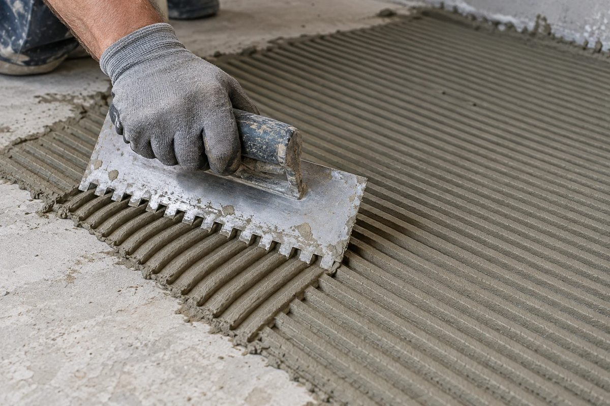
Illustration · Fresh adhesive, parallel ridges and transfer
47 · InstallationCritical
Cold, heat and sunlight: check temperatures
Measure air and substrate temperatures. X-GEL S1 and X-Color 06: +5 to +35 °C; SafetyGel: +5 to +40 °C. For Pixel 3D use +5 to +35 °C, the stricter limit in its data sheet. Protect against draughts, direct sun and rain. Do not tile frozen or overheated substrates, or where frost threatens during curing.
The complete system limits and actual conditions apply. Heat and wind can form an adhesive skin within minutes: spread smaller areas and check transfer.
Apply two undiluted, continuous coats in perpendicular directions, without gaps. At +23 °C and 50 % relative humidity, wait at least 2 hours between coats. At +10 °C, wait 6 hours.
Cold, humidity or poor ventilation increase the actual time. Check that the coat is dry before proceeding.
Bring the wall waterproofing down to the shower tray connection. Its return onto the tray must stop within the footprint of the specified silicone joint at the wall–tray junction, without extending onto the visible or usable tray surface. Make a continuous connection using the compatible products or accessories specified by the system. Never stop the waterproofing above the tray.
The flexible joint between the tiles and the tray is only the visible finish. It cannot compensate for interrupted or poorly connected waterproofing.
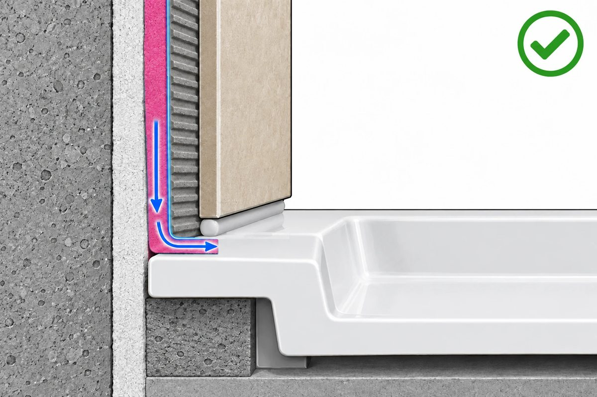
Technical section · connection confined to the silicone joint footprint
SECOTECHGood practice guide · English
16 · WaterproofingCritical
Watertight penetrations and connections
Treat pipes, drains, corners, wall-to-floor connections and shower-tray connections using the compatible accessories specified by the system.
Waterproofing must remain continuous. Improvised silicone sealing does not replace a specified collar or tape.
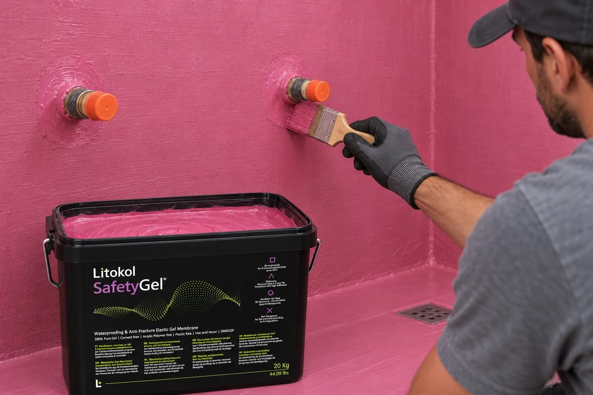
Litokol SafetyGel · brush application around pipes
17 · WaterproofingCritical
Shower falls and drainage
Before waterproofing and tiling, check the fall, drain-grate height, screed connection and absence of reverse falls. Carry out a drainage test where possible.
Buildwise recommends a minimum fall of 1.5 % towards the drain for both the screed and the tiles.
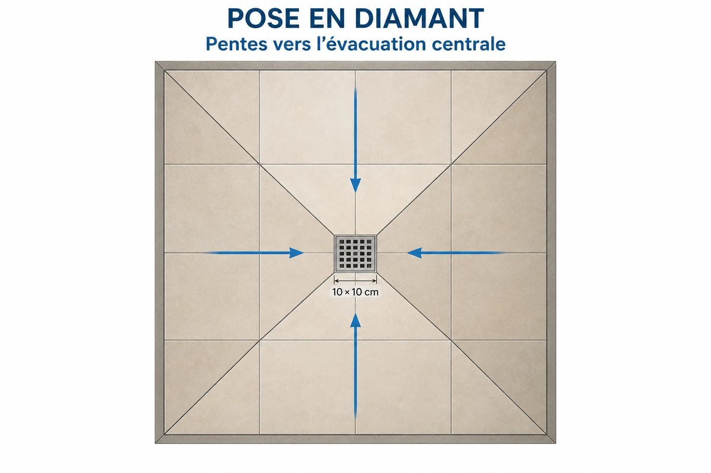
Top view · diagonal cuts towards a 10 × 10 cm central drain
Before tiling, check continuity, required coverage or thickness and drying. Check corners, penetrations and drains according to the system. Photograph details before they are concealed. Carry out the specified watertightness test only after the permitted waiting time and using the approved method.
Repair defects with a compatible solution before covering. Do not mix accessories from different systems without approval.
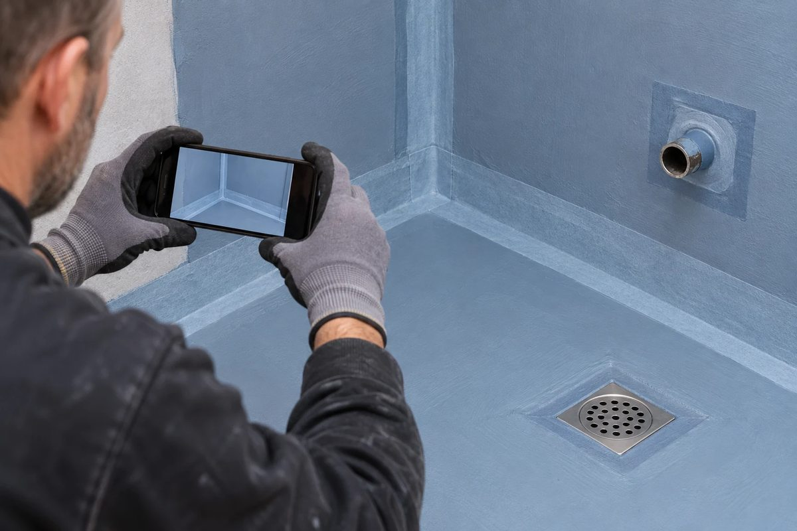
Illustration · Check waterproofing before covering
03 · FinishesStandard
Joint next to a metal trim
Leave a regular joint between the tile and the metal trim. Fill it completely with the specified grout. Never place a tile directly against the metal.
The joint prevents direct contact, protects the tile edge and gives an even finish.
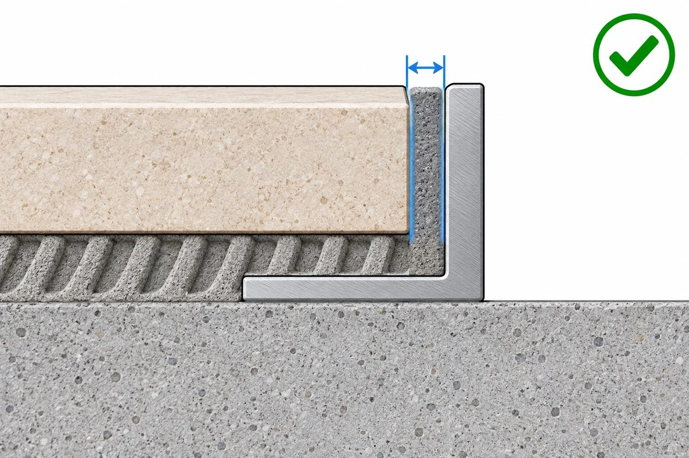
Correct · filled joint between tile and trim
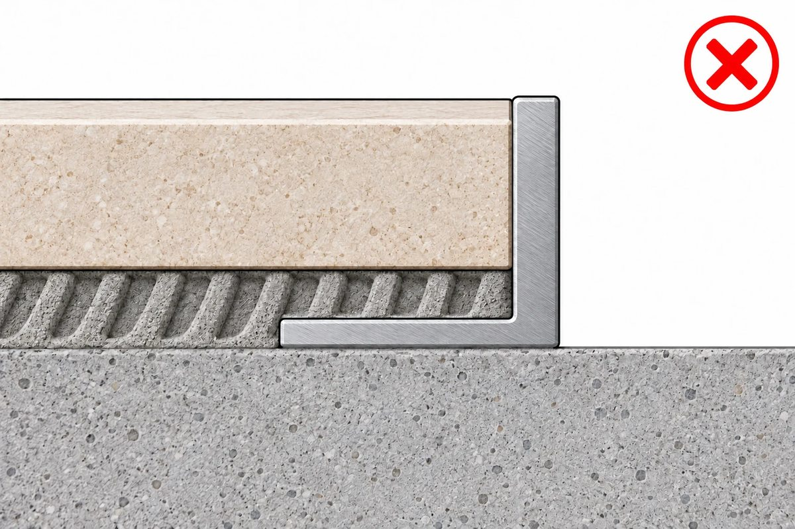
Prohibited · tile directly against the trim
SECOTECHGood practice guide · English
04 · FinishesStandard
45° mitres on external skirting corners
At external corners, make two clean 45° cuts and join the skirting tiles with a mitre, unless the drawing specifies a trim or a special finishing piece.
The corner must be closed, aligned and free of visible unfinished edges.
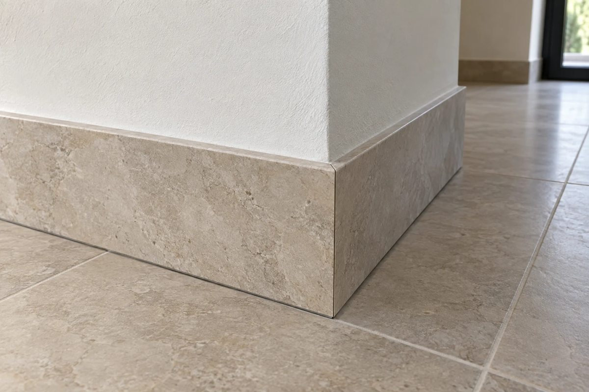
Actual finish · mitred external corner
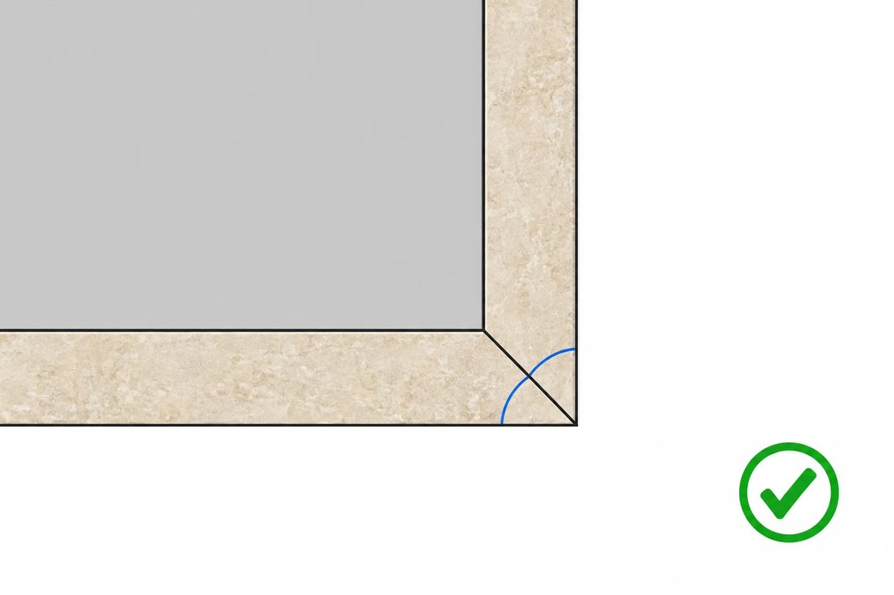
Top view · two 45° cuts
21 · FinishesSecotech rule
All holes must be drilled with a round hole saw
All holes in tiles must be made with a round diamond hole saw suited to the material and required diameter. Square openings cut with an angle grinder are prohibited, even if later concealed by an escutcheon or fitting. Holes must be regular, centred and free of visible chips.
A clean round hole reduces crack initiation points and oversized openings. Never hide a square or defective cut-out with silicone.
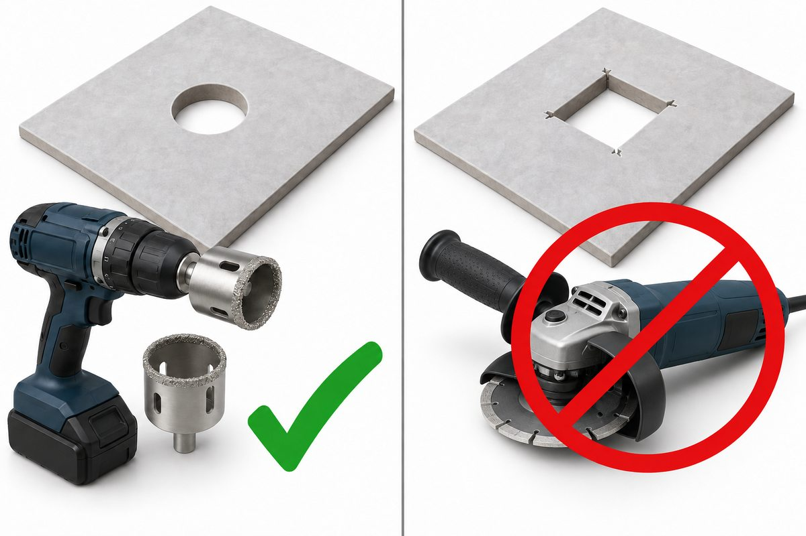
Allowed: round hole made with a diamond hole saw. Prohibited: square hole cut with an angle grinder.
SECOTECHGood practice guide · English
36 · FinishesCritical
Clean, continuous flexible joints
Prepare clean, dry joint faces. Use sealant compatible with the materials and intended use, with primer and backing rod where specified. Follow the specified joint shape and depth, smooth without hollows and protect until cured.
Sealant must be able to deform. A flexible finishing joint never replaces waterproofing beneath tiles.
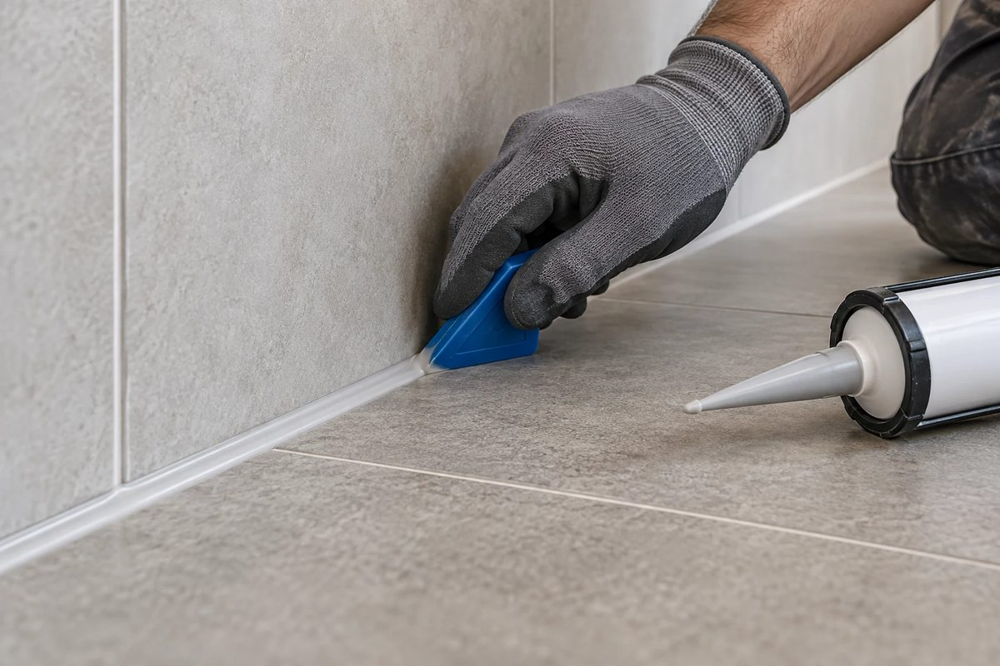
Illustration · Clean, continuous flexible joints
51 · FinishesSecotech rule
Final checks and photos before leaving
Before leaving, check joints, edges, skirting, cuts, connections and cleanliness for visible defects. Photograph overall views and details, identify outstanding items and protection left in place. Send through OPENBTP or WhatsApp to the site manager with site, area and date. Communicate service waiting times and request the completion inspection.
The team leaving is not acceptance of the work. Track and close outstanding items following the site manager’s instructions.
SECOTECHGood practice guide · English
07 · ProductsCritical
Mixing X-GEL S1
For a 20 kg grey bag, use 6.0 to 6.6 litres of water. For a 20 kg white bag, use 6.2 to 6.8 litres. Pour in the measured water, gradually add the powder and mix until smooth. Wait 5 minutes, then mix briefly again.
Two mixing stages are required. Never add water once the mixture has started to set.
Spread X-GEL S1 on the substrate with a notched trowel suited to the tile size and substrate. Keep the ridges straight and parallel. Lay the tile in fresh adhesive, then regularly lift a tile to check transfer and adjust the method if needed.
The mixture remains usable for 6 to 8 hours and the open time exceeds 40 minutes only under reference conditions.
Place pedestals on a stable, rigid surface with adequate load-bearing capacity. Clean the surface, check drainage beneath the terrace and protect the waterproofing membrane. Provide protection compatible with the substrate.
The void beneath the slabs does not replace substrate drainage. The PB data sheet limits use to pedestrians, without vehicles or vibrating equipment.
Select each pedestal within its adjustment range. If the finished level must compensate for the support slope, use the specified compatible slope corrector. Fit spacers for the chosen joint width and suitable pads. Check the level and support of every slab.
Joints remain open to let water through. Every pedestal must bear firmly and no slab may rock when walked on.
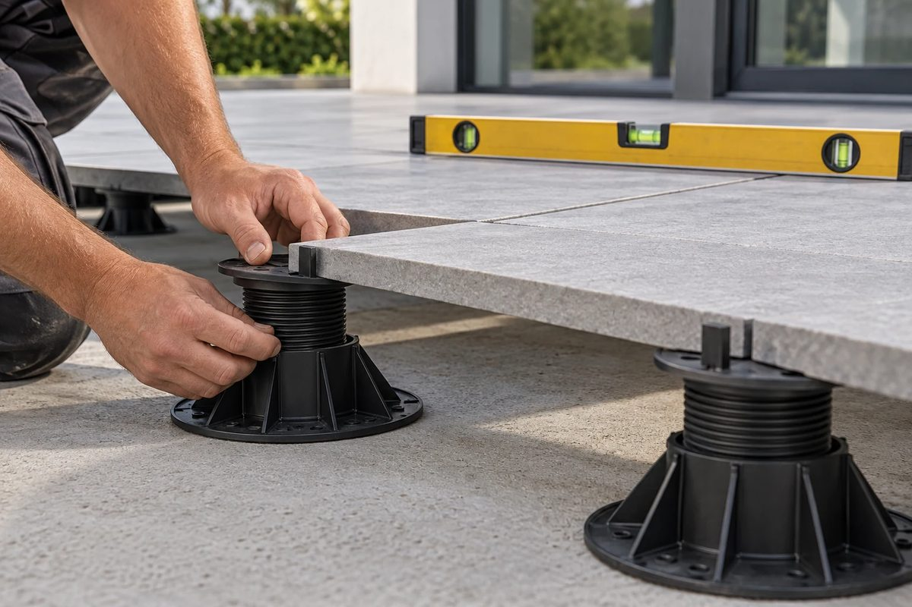
Illustration · Adjust pedestals and keep joints open
Provide the system's edge accessories. Against a wall, U-WALL-PP maintains a 5 mm gap. For perimeter cuts from 2 to 14 cm, Buzon offers U-EDGE with the fixing interface suited to the pedestal.
Cut pieces must be supported and restrained. Use compatible spacers and pads; never leave a small piece balancing unsecured.
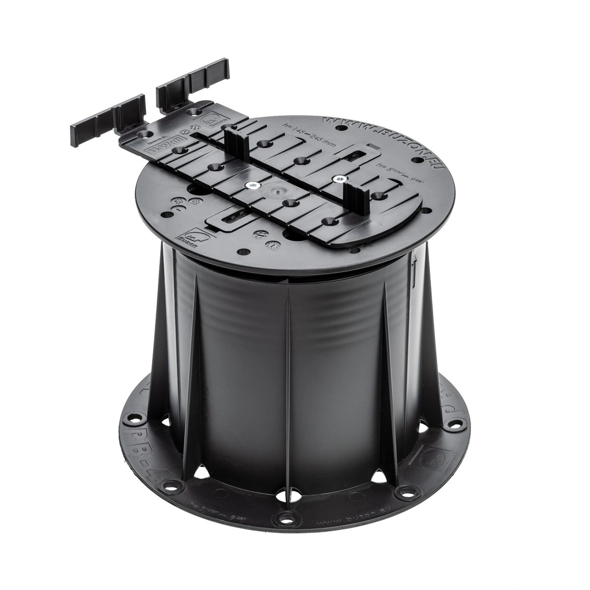
U-WALL-PP mounted on a pedestal · official Buzon photo
Follow the support layout at corners, along edges and at the centre according to slab size. The diagrams below reproduce the positions recommended by Buzon for the sizes shown.
Count pedestals on the complete terrace plan, allowing for shared supports, edges and cuts.
Each circle represents a support beneath the slab. Edge and corner supports may be shared: do not simply multiply these numbers by the number of slabs.
40 × 40 cm 4 supports
4 corners
50 × 50 cm 4 supports
4 corners
60 × 60 cm 4 supports
4 corners
75 × 75 cm 5 supports
4 corners + centre
80 × 80 cm 5 supports
4 corners + centre
90 × 90 cm 9 supports
4 corners + 4 edge midpoints + centre
100 × 100 cm 9 supports
4 corners + 4 edge midpoints + centre
120 × 30 cm 6 supports
4 corners + midpoint of the 2 long edges
120 × 40 cm 6 supports
4 corners + midpoint of the 2 long edges
120 × 60 cm 6 supports
4 corners + midpoint of the 2 long edges
90 × 45 cm 6 supports
4 corners + midpoint of the 2 long edges
Positions from the Buzon PB 2025 catalogue, p. 105, for direct installation on pedestals. Slab manufacturer requirements and site conditions may call for extra supports. Have unlisted sizes and staggered layouts confirmed.
For E-BRS-41 or U-BRS-38: maximum 80 cm between pedestal centres along one rail. For E-BRS-27 or U-BRS-24: maximum 60 cm. Between rail centres: maximum 60 cm, reduced as required by tile size, strength and manufacturer instructions. Do not confuse these two spacings.
Measure spacing from centre to centre. The rail profile and slab size determine the supports required.
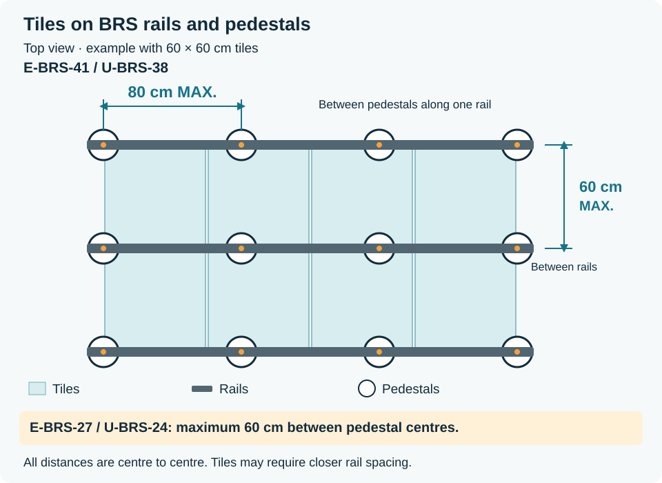
BRS diagram · maximum 80 cm between pedestals for high rails, 60 cm between rails
Protecting finished tiling is not a routine task: do it ONLY AT THE EXPRESS REQUEST OF THE SITE MANAGERS. Following their request and after sufficient curing, install the specified protection against impacts, scratches, abrasive dust and traffic from other trades.
Confirm the area and type of protection requested. Use clean, suitable, non-staining protection; check adhesive compatibility. Unroll protection onto exposed tiles, without covering an area that is already protected.
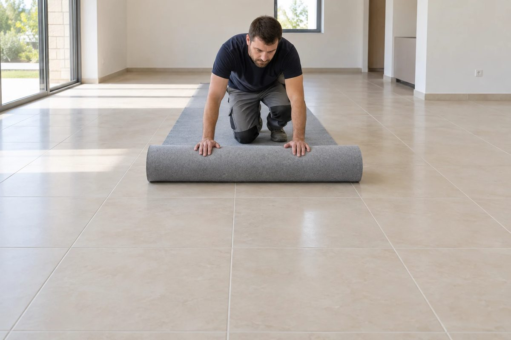
Protection at the express request of the site manager · unrolling onto exposed tiles
24 · ProtectionCritical
Protect the shower tray before starting
Before waterproofing or tiling, thoroughly clean the shower tray. Fit clean protective cardboard cut to the tray dimensions, then secure it with compatible tape that leaves no residue. Start work only once this protection is in place.
Secured cardboard protects the tray from scratches, impact, tools, adhesive and waterproofing residues throughout the work.
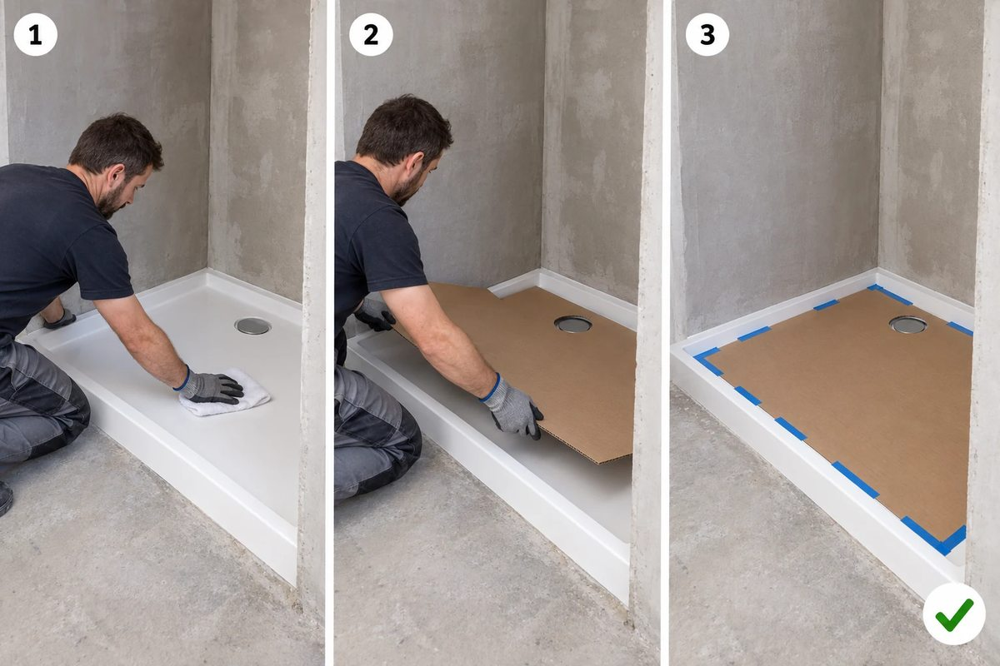
Clean · cut cardboard to size · secure protection
SECOTECHGood practice guide · English
37 · ProtectionCritical
Waiting times before traffic and water exposure
Keep the area closed until the system waiting times expire. X-GEL S1 at +23 °C and 50% RH: wall grouting after 6–8 h, floor grouting after 12 h, foot traffic after 12 h and service after 5 days. X-Color 06: foot traffic after 24 h, service after 7 days. Pixel 3D at +23 °C: foot traffic after 24 h, service after 5 days.
A shower may be used only after all components have fully cured. Follow the longest applicable system time, adjusted for site conditions. See the product table; a dry sealant skin does not mean full-depth curing.
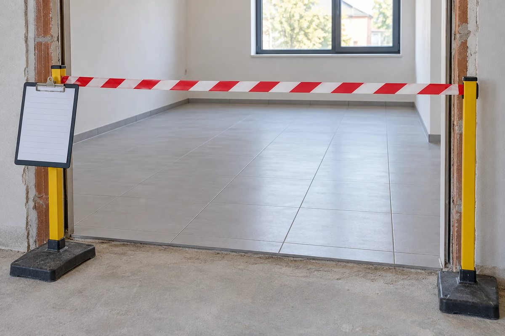
Illustration · Waiting times before traffic and water exposure
38 · ProtectionCritical
Final cleaning suited to the covering
Use products and methods compatible with the tiles, grout, stone and trims. Test in an inconspicuous area, follow dilution and rinsing instructions, then remove residues. Protect sensitive components during cleaning.
Do not use acid on limestone or aggressive products without checking compatibility. Do not pour water containing adhesive or cement into drains.
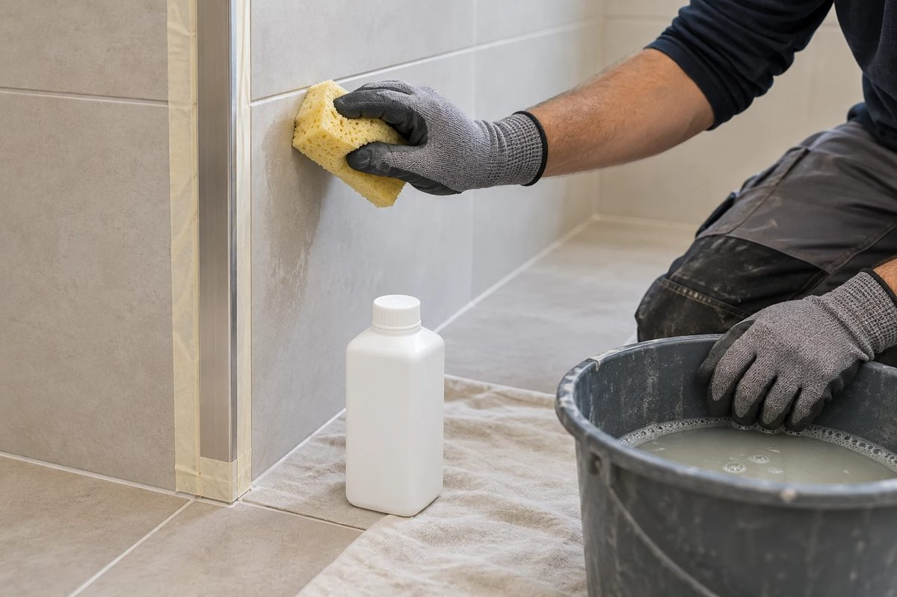
Illustration · Final cleaning suited to the covering
SECOTECHGood practice guide · English
39 · SafetyCritical
Cutting: reduce silica dust
Prefer suitable manual cuts, wet cutting with a tool designed for it, or extraction at source. Isolate the station and protect other workers. Vacuum with equipment suitable for hazardous dust or wet-clean; do not dry-sweep or use compressed air.
Cutting outdoors alone does not remove the risk. Supplement collective controls with the respiratory protection specified for the task.
Wear suitable protection: safety footwear, eye and hearing protection, gloves compatible with the task and knee pads. Check tools, discs, guards and cables; disconnect power before changing accessories. Use suitable handling aids for large slabs and additional workers when needed.
Remove defective tools from service. Protect cables from water and never remove a guard to make cutting easier.
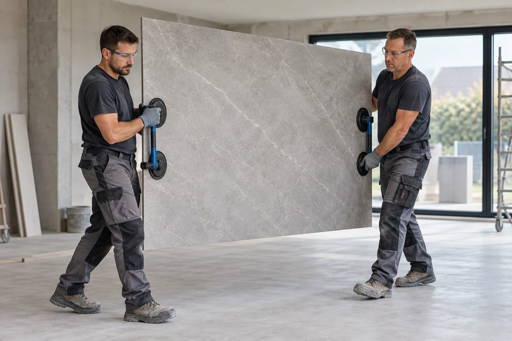
Illustration · Protective equipment, tools and handling
SECOTECHGood practice guide · English
48 · SafetyZero tolerance
Safety induction, safety plan and suitable protection
Complete the site safety induction and read the applicable safety and health plan (PSS): access, evacuation, first aid and task risks. For work at height, use authorised, stable and inspected equipment; no improvised supports or unsuitable ladders. Cement adhesives and grouts are alkaline: wear suitable gloves and goggles and follow the SDS. After a splash, rinse immediately with plenty of water, alert the first aider and follow the SDS. Alcohol and drugs are prohibited during work; do not work while impaired.
If induction, protection or safe conditions are missing, stop and inform the site manager. Collective protection takes priority.
Stop the activity and make it safe without putting yourself at risk. For a serious emergency, call 112 without waiting for Secotech: give the exact site address, access, accident type and number of casualties. Follow the operator and alert the site first aider. Arrange to guide emergency services and clear access. Then inform the site manager and Secotech on +32 498 32 49 49.
Also report near misses and record facts in OPENBTP or WhatsApp. Never delay emergency help to take photos. Resume only once the danger is removed and the site manager agrees.
Never urinate in a bottle or container. Never use sanitary fittings in the building under construction. Use only the designated site toilets.
Report any access or maintenance problem to the site manager immediately.
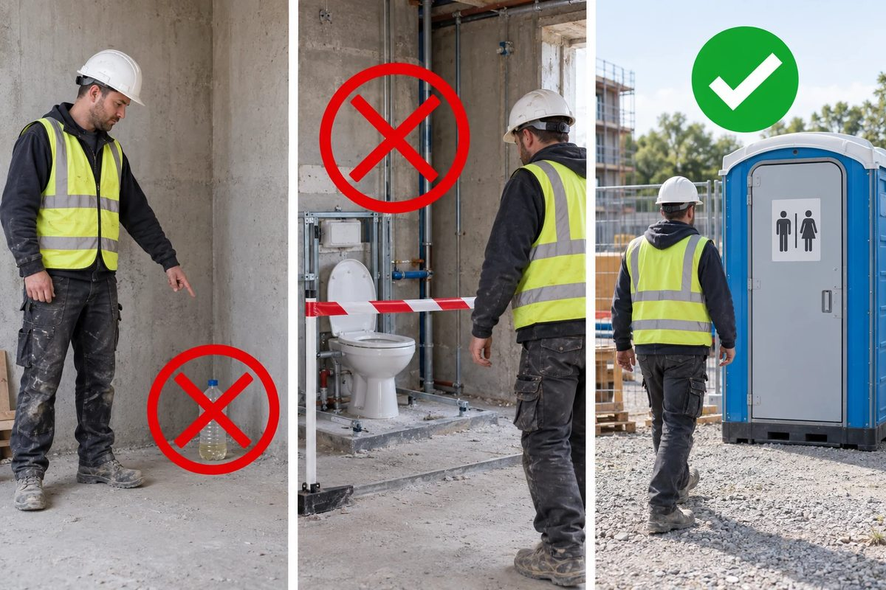
Bottles and building toilets prohibited · use site toilets
19 · Site organisationCritical
Tidy work areas every day
At the end of every day, tidy and clean all work areas. Remove waste, empty buckets and packaging; clean away adhesive, mud, dust and water, then store tools and materials in the designated area.
Walkways, access routes and exits must stay clean, clear and safe for other trades and for work the next day.
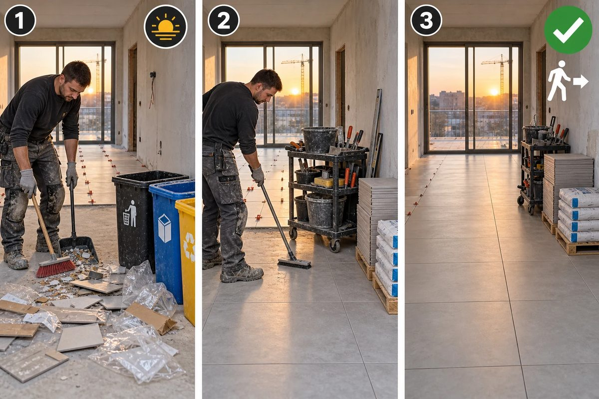
Remove waste · clean and tidy · keep routes clear
SECOTECHGood practice guide · English
20 · Site organisationZero tolerance
Report damage and mistakes immediately
Immediately report any damage, mistake, breakage, leak or harm to other work, with photographs and the precise location. Do not hide the problem or continue without instructions.
Prompt reporting limits repairs and costs.
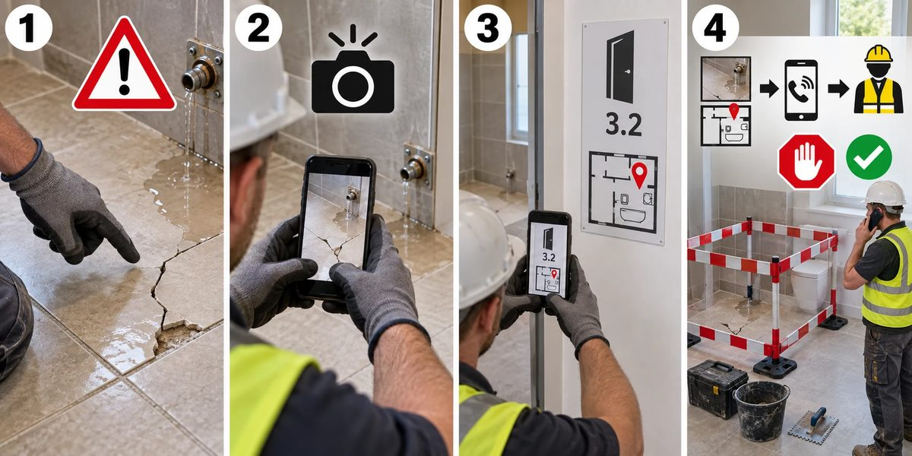
Identify · photograph · locate · stop and report
22 · Site organisationCritical
Separate and remove waste
Separate inert waste, cardboard and mixed waste into the designated containers or areas. Stack tile offcuts flat and securely on a dedicated pallet. Remove each category regularly without mixing them and shelter stored waste from rain.
Sorting supports proper disposal, avoids contamination between waste streams and prevents wet packaging from dirtying the site.
Once painting or joinery installation starts, stop cutting with an angle grinder indoors. Set up the cutting station outdoors in the permitted area and clean up the dust and residues produced.
Abrasive cutting dust damages paintwork, joinery, glazing and completed work.
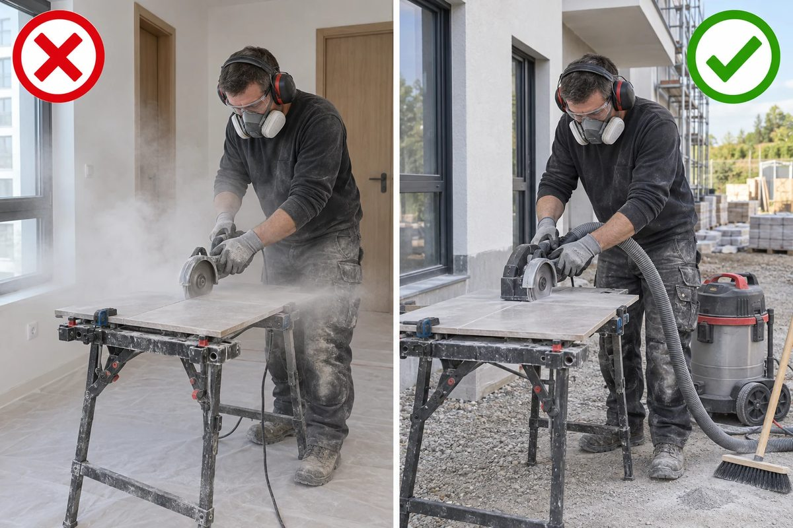
No indoor cutting after finishing starts · outdoor cutting station
41 · Site organisationSecotech rule
Working hours, neighbours and no smoking
Respect permitted working hours and areas. Notify the site manager before noisy or dusty work and coordinate access with other trades. Secotech rule: no smoking or vaping inside buildings; use only the permitted outdoor area.
Respect occupants and their belongings. Keep access routes and exits clear and immediately report dangerous situations.
Illustration · Working hours, neighbours and no smoking
SECOTECHGood practice guide · English
44 · Site organisationZero tolerance
Never empty cleaning buckets into drains
Never pour buckets used to clean tile adhesive or grout into a kitchen sink, washbasin, toilet, shower, floor drain or street gutter connected to a stormwater drain. Collect the dirty water in a watertight container and allow it to settle. Put only the hardened residue into the designated mineral construction-waste skip, following the site manager's instructions. Keep the remaining water in its container until it is treated or collected through an authorized route.
Residue can harden and block pipework. Even after settling, do not pour the remaining water into a drain without explicit instructions from the site manager.
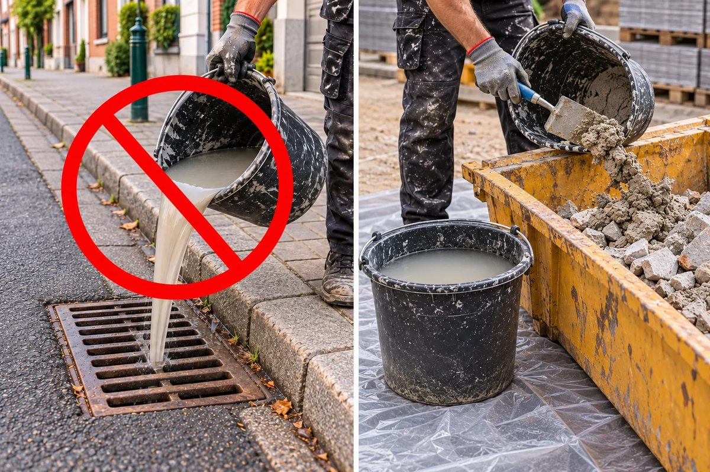
Forbidden: dirty water into the street drain · hardened residue into the mineral-waste skip, liquid kept separately
50 · Site organisationSecotech rule
Additional work and measurement
No additional work without prior written approval from Secotech specifying the area, work and terms. For unexpected conditions, make safe and request written instructions. Measure and account by area and item using the applicable measurement standards and contract documents; identify rules for openings, deductions and accessories. Submit records for verification before invoicing.
Treat quantities, openings, accessories and cutting waste according to the measurement rules adopted for the contract. Clarify any ambiguity in writing before execution.
Litokol reference data: +23 °C, 50% RH unless stated otherwise. Adjust to actual conditions and the delivered product data sheet. Waiting times add up between successive steps; every component must be ready before service.
Product
Water / preparation
Working time
Before next step
Foot traffic
Service
Application
X-GEL S1
Grey: 6.0–6.6 L / 20 kg. White: 6.2–6.8 L / 20 kg. Rest 5 min.
Pot life: 6–8 h. Open time > 40 min.
Grouting: wall 6–8 h; floor 12 h.
12 h
5 days; pools 14 days.
+5 to +35 °C
SafetyGel
Ready to use; undiluted coats after substrate preparation.
Wait for full drying between coats.
Between coats AND before tiling: 2 h; at +10 °C: 6 h.
Cover the membrane; no direct traffic.
Service depends on the complete system.
+5 to +40 °C
X-Color 06
5.6–6.0 L / 20 kg (28–30%).
Pot life: about 40 min.
Sponge cleaning: about 20–25 min; check setting.
24 h
7 days; pools 14 days.
+5 to +35 °C
Pixel 3D
Ready to use; do not add water.
Skin formation: about 15 min.
Full-depth cure: about 2–3 mm / 24 h.
24 h at +23 °C
5 days at +23 °C.
Use +5 to +35 °C; ideal +15 to +25 °C.
For showers, wait for full curing of waterproofing, adhesive, grout and sealant. Skin formation does not allow water exposure. Confirm the complete system waiting time.
I confirm receiving and understanding this edition and the site instructions. I know whom to contact and will ask for clarification if I do not understand. This signature does not replace safety induction, training or acceptance of the work.